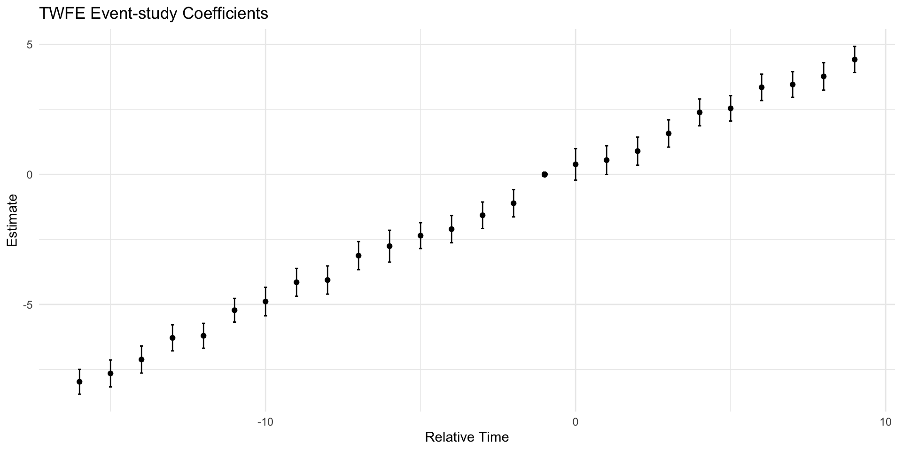
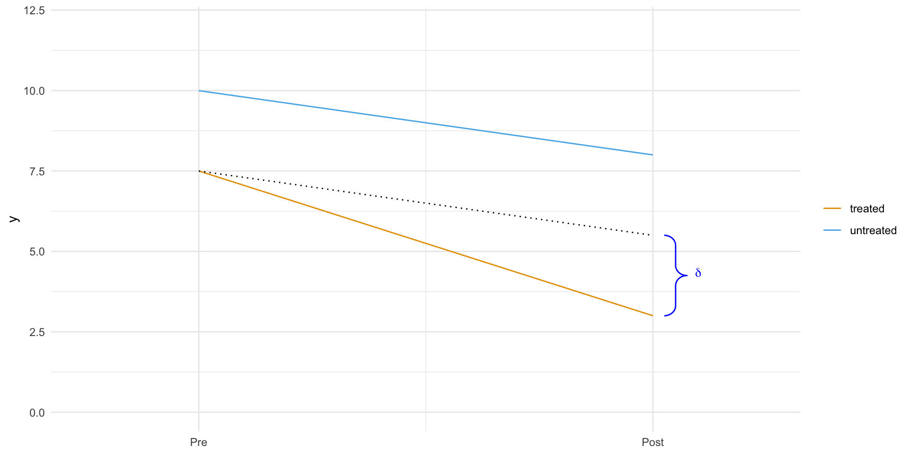
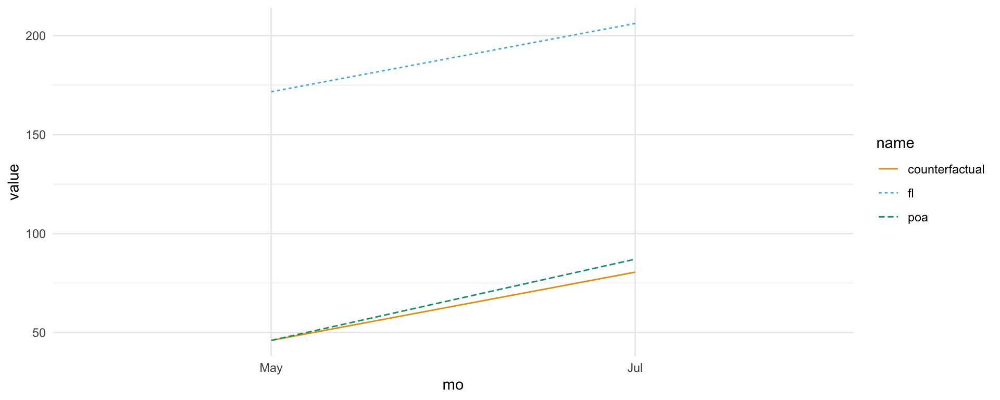

Causality temp
Difference-in-Differences
Difference-in-Differences (2x2 DiD)
- Assume panel data on for and
- Treatment timing: Some units () are treated in period ; every other unit is untreated
- Potential outcomes (POs): Observe for treated units; and for comparison.
DiD Estimation and Inference
- The most conceptually simple estimator replaces population means with sample analogs: where is sample mean for group in period
- This is also know as “4 averages and three subtractions”
- Causally we evaluate before treatment vs after treatment
DiD Estimation and Inference
- Conveniently, is algebraically equal to OLS coefficient from where . It’s also equivalent to from .
- Inference: clustered standard errors are valid as number of clusters grows large.
DiD Estimation and Inference
Aggregating individuals into treated and untreated groups:
- , and
- ,
- with and
- so
DiD Causal Inference
Under what conditions does DiD have a causal interpretation?
Our estimator is
If we add zero
Causal Inference
So for our DiD estimator to estimate a causal estimand (ATT) we need these assumptions satisfied:
No anticipation:
Parallel trends:
Causal Inference
No anticipation: no treatment before treatment, so make sure your baseline is untreated (be aware of ”announcement dates” vs ”implementation dates”)
Parallel trends: this needs to be supported by data, e.g. pre-trends or trends in similar groups
Causal Inference
DiD
The 2x2 method is interpreted as before and after, but these periods can be multiple time periods
Simple 2x2 example
Simple 2x2 example
# A tibble: 4 × 3
# Groups: post [2]
post treat mean_l_homicide
<dbl> <dbl> <dbl>
1 0 0 1.25
2 0 1 1.79
3 1 0 1.20
4 1 1 1.80[1] 0.06824OLS estimation, Dep. Var.: l_homicide
Observations: 462
Standard-errors: Clustered (state)
Estimate Std. Error t value Pr(>|t|)
(Intercept) 1.25185 0.10268 12.1918 3.2179e-15 ***
post::1 -0.05540 0.03302 -1.6775 1.0105e-01
treat::1 0.53422 0.17048 3.1337 3.1842e-03 **
post:treat 0.06824 0.08417 0.8107 4.2221e-01
---
Signif. codes: 0 '***' 0.001 '**' 0.01 '*' 0.05 '.' 0.1 ' ' 1
RMSE: 0.532721 Adj. R2: 0.189901OLS estimation, Dep. Var.: l_homicide
Observations: 462
Weights: popwt
Standard-errors: Clustered (treat)
Estimate Std. Error t value Pr(>|t|)
(Intercept) 1.56018 6.970e-16 2.237e+15 2.8452e-16
post::1 -0.09338 5.570e-16 -1.676e+14 3.7992e-15
treat::1 0.35026 7.090e-16 4.939e+14 1.2889e-15
post:treat 0.04565 1.095e-15 4.170e+13 1.5267e-14
(Intercept) ***
post::1 ***
treat::1 ***
post:treat ***
---
Signif. codes: 0 '***' 0.001 '**' 0.01 '*' 0.05 '.' 0.1 ' ' 1
RMSE: 962.9 Adj. R2: 0.134205Longitudinal Data
Two types of longitudinal data:
- Panel Data: same units tracked over time (e.g., National Longitudinal Survey of Youth 1997)
Repeated Cross-Sections: different units sampled at each time (e.g., Census, Current Population Survey)
- Violations of parallel trends can arise differently across data types.
Longitudinal Data
We have a balanced panel when all units are observed in every period.
- Imbalanced panel is when units missing in some periods.
- Anthony is in periods 1-3,
- Bob is in periods 1-3,
- Inez is in periods 1 and 3 only,
- Dignan is in periods 1 and 2 only.
- Missingness alone does not violate parallel trends, though it does change the parameter.
Longitudinal Data
In the potential outcomes framework, a treatment effect is defined at the individual level, .
So if you are missing a person, i, in a period, t, then it does not contribute.
The more heterogeneity in the treatment effects, the more the broken panel will shift away from what you think you’re after.
Repeated cross-sections
- One of the risks of a repeated cross-section is that the composition of the sample may have changed between the pre and post period in ways that are correlated with treatment.
- Hong (2013) uses repeated cross-sectional data from the Consumer Expenditure Survey (CEX) containing music expenditure and internet use for a random sample of households.
- Study exploits the emergence of Napster (first file sharing software widely used by Internet users) in June 1999 as a natural experiment.
- Study compares internet users and internet non-users before and after emergence of Napster.
Repeated Cross Section Risks
- Repeated cross sections have their own challenges that panels don’t in that the group could be shifting compositionally.
- Detect using a balance table with covariates highly predictive of the missing E[Y0|D= 1] for this exercise
- Percent of cat owners is probably irrelevant to trends in potential outcomes
- But age and income is probably relevant for spending habits
- We’ll discuss covariates more later, but for now just consider what characteristics are relevant to your outcome
- Documenting covariates that cannot be affected by the treatment like this table is a way to check for compositional changes in the sample.
Repeated Cross Section Risks
| Characteristic | 1997 | 1998 | 1999 | |||
| User | Non-user | User | Non-user | User | Non-user | |
| Demographics | ||||||
| Age | 40.2 | 49.0 | 42.3 | 49.0 | 44.1 | 49.4 |
| Income | $52,887 | $30,459 | $51,995 | $26,189 | $49,970 | $26,649 |
| High school graduate | 0.18 | 0.31 | 0.17 | 0.32 | 0.21 | 0.32 |
| Some college | 0.37 | 0.28 | 0.35 | 0.27 | 0.34 | 0.27 |
| College grad | 0.43 | 0.21 | 0.45 | 0.21 | 0.42 | 0.20 |
| Manager | 0.16 | 0.08 | 0.16 | 0.08 | 0.14 | 0.08 |
2X2 DiD & covariates
- 2x2 relies on parallel trends (PT) and no anticipation (NA) to be causal
- What if PT is violated and the violation is due to covariates:
- imbalance between treated an untreated where covariates are related to outcome dynamics
- heterogeneous treatment effects related to covariates
2X2 DiD & covariates
As before, for our DiD estimator to be a causal estimate (ATT) we need (note: conditional on covariates X)
No anticipation:
Parallel trends:
2X2 DiD & covariates (reg)
Under our assumptions, we can model the outcome evolution and estimate the counterfactual untreated outcome in period 2 for the treated group using regression, and our estimator
becomes
2X2 DiD & covariates (reg)
Using regression the estimate uses
and estimates the true, unknown
2X2 DiD & covariates (reg)
Why not just use fixed effects regression?:
- assumes homogeneous treatment effects
- trends will not be -specific
2X2 DiD & covariates (IPW)
Consider the following expression, with propensity and :
2X2 DiD & covariates (IPW)
so and so averaging over the covariates:
2X2 DiD & covariates (DR)
We can also use a doubly robust estimator:
for …
2X2 DiD & Fixed Effects
The regression estimator for the 2x2 DiD (2 groups, 2 time periods) is
where is the DiD estimator: it captures the treatment effect. This model is identical to the DiD formula:
2X2 DiD & Fixed Effects
The fixed effect estimator is used when you have more than 2 time periods and/or many units, typically in panel data.
It generalizes the 2x2 model by removing group and time differences via demeaning.
2X2 DiD & Fixed Effects
| 2×2 Regression DiD | Fixed-Effects DiD | |
|---|---|---|
| Groups | 2 (treated/control) | Many units/groups |
| Controls | Only group/time/treatment | Time and unit fixed effects |
| Estimator | Coefficient on interaction term | Coefficient on treatment dummy in FE model |
| Parallel trends | Applies across 2 groups | Applies across time for all units |
| Flexibility | Limited | Handles richer settings (e.g. unbalanced panels, staggered timing) |
Event Studies & Fixed Effects
It is very common to evaluate the common trend assumption using event studies via a dynamic (TWFE) regression specification including indicators for time relative to treatment. This permits “visual inference” to determine whether the treated group’s trends appear to have deviated from the comparison group’s trends right around the time of treatment.
Event Studies & Fixed Effects
The dynamic (TWFE) regression specification is, for period and treatment at T=0:
So
Event Studies & Fixed Effects
In the case where there are no effects and e.g. and
and the event study looks like:
Event plot
#Set simulation params ----
N <- 100; firstT <- -15; lastT <- 10; slope <- 0.5; seed <- 123
#Generate data ----
set.seed(seed)
# df <- purrr::cross_df(.l = list(t = seq(from = firstT, to = lastT),i = seq(from = 1, to = N)))
df <- tidyr::expand_grid(t = seq(from = firstT, to = lastT),i = seq(from = 1, to = N))
start_dates <- data.frame(i = seq(from =1 , to = N),g = c(rep(1,N/2), rep(Inf, N/2)))
df <- dplyr::left_join(df, start_dates, by = "i"); df$d <- df$g <= df$t
df$y <- slope * df$t * (df$g == 1) + rnorm(NROW(df), mean =0)
# Run TWFE event-study ----
twfe <- fixest::feols(y ~ i(t, g==1, ref=0) | i + t, data = df, cluster = "i")
eventplotdf <- as.data.frame(twfe$coeftable[1:(lastT-firstT),])
eventplotdf$relativeTime <- c(seq(firstT,-1),seq(1,lastT))-1
eventplotdf$ub <- eventplotdf$Estimate + 1.96 * eventplotdf$`Std. Error`
eventplotdf$lb <- eventplotdf$Estimate - 1.96 * eventplotdf$`Std. Error`
ggplot(eventplotdf,
aes(x = relativeTime,
y = Estimate,
ymax = ub,
ymin = lb)) +
geom_point() +
geom_point(x=-1,y=0) +
geom_errorbar(width = 0.1) +
xlab("Relative Time") +
ggtitle("TWFE Event-study Coefficients") +
theme(plot.title= element_text(hjust=0.5)) +
theme_minimal()
Difference-in-Differences
Three Billboards in the South of Brazil
To figure out how good billboards were as a marketing channel, A bank placed 3 billboards in the city of Porto Alegre, the capital of the state of Rio Grande do Sul.
They wanted to see if that boosted deposits into our savings account.
Rio Grande do Sul is part of the south of Brazil, one of the most developed regions.
Data was also obtained from another capital from the south, Florianopolis, the capital city of the state of Santa Catarina in Brasil. The idea is that Florianopolis could be used as a control sample to estimate the counterfactual when compared to Porto Alegre. The billboard was placed in Porto Alegre for the entire month of June. The resulting data like this:
Code
dat <- tibble::tibble(
y = c(10,8,7.5,3)
, x = c(2,4,2,4)# c("pre","post","pre","post")
, cls = as.factor(c("untreated","untreated","treated","treated"))
) |> dplyr::group_by(cls)
dat |>
ggplot(aes(x=x, y=y, color = cls)) +
geom_line() +
geom_line(
inherit.aes = FALSE,
data = tibble::tibble(x = c(2,4), y = c(7.5,5.5)), aes(x=x, y=y, fill = 'black'), linetype = 'dotted') +
xlim(1,5) + ylim(0,12) +
theme_minimal() +
theme(legend.title = element_blank(), axis.title.x = element_blank()) +
scale_x_continuous(breaks=c(2,4), labels=c("Pre", "Post"), limits = c(1.5,4.5)) +
ggbrace::stat_brace(
data = data.frame(x = c(3.8, 4.0), y = c(5.5, 3)),
aes(x, y),
rotate = 90, size = .5, col = "blue"
) +
annotate("text",
x = 4.2, y = 4.35,
label = expression(delta),
parse = TRUE, size = 3.5, col = "blue"
) 
Difference-in-Differences
Three Billboards in the South of Brazil
In this example deposits are our outcome variable, the one the bank wishes to increase with the billboards. POA is a dummy variable for the city of Porto Alegre. When it is zero, it means the samples are from Florianopolis. Jul is a dummy for the month of July, or for the post intervention period. When it is zero it refers to samples from May, the pre-intervention period.
Difference-in-Differences
DID Estimator
Let be the potential outcome for treatment D on period T. In an ideal world where we have the ability to observe the counterfactual, we would estimate the treatment effect of an intervention the following way:
In words, the causal effect is the outcome in the period post intervention in case of a treatment minus the outcome in also in the period after the intervention, but in the case of no treatment. Of course, we can’t measure this because is counterfactual.
Difference-in-Differences
DID Estimator
One way around this is a before and after comparison.
In our example, we would compare the average deposits from POA before and after the billboard was placed.
Code
data_bboard <- readr::read_csv("./data/billboard_impact.csv", show_col_types = FALSE)
poa_before <- data_bboard |> dplyr::filter(poa==1 & jul==0) |> dplyr::pull(deposits) |> mean()
poa_after <- data_bboard |> dplyr::filter(poa==1 & jul==1) |> dplyr::pull(deposits) |> mean()
poa_after - poa_before[1] 41.05This estimator is telling us that we should expect deposits to increase R after the intervention. But can we trust this?
Difference-in-Differences
DID Estimator
Notice that , the observed outcome for the treated unit before the intervention is equal to the counterfactual outcome for the treated unit also before the intervention. Since we are using this to estimate , the counterfactual after the intervention, this estimation above assumes that .
It is saying that in the case of no intervention, the outcome in the latter period would be the same as the outcome from the starting period. This would obviously be false if your outcome variable follows any kind of trend.
Difference-in-Differences
DID Estimator
For example, if deposits are going up in POA, , i.e. the outcome of the latter period would be greater than that of the starting period even in the absence of the intervention.
With a similar argument, if the trend in Y is going down, . This is to show that this before and after thing is not a great estimator.
Difference-in-Differences
DID Estimator
Another idea is to compare the treated group with an untreated group that didn’t get the intervention:
In our example, it would be to compare the deposits from POA to that of Florianopolis in the post intervention period.
Code
fl_after <- data_bboard |> dplyr::filter(poa==0 & jul==1) |> dplyr::pull(deposits) |> mean()
poa_after - fl_after[1] -119.1This estimator is telling us that the campaign is detrimental and that customers will decrease deposits by R$ 119.10.
Difference-in-Differences
DID Estimator
This estimator is telling us that the campaign is detrimental and that customers will decrease deposits by R.
Notice that . And since we are using to estimate the counterfactual for the treated after the intervention, we are assuming we can replace the missing counterfactual like this: .
But notice that this would only be true if both groups have a very similar baseline level. For instance, if Florianopolis has way more deposits than Porto Alegre, this would not be true because .
On the other hand, if the level of deposits are lower in Florianopolis, we would have .
Difference-in-Differences
DID Estimator
Notice that . And since we are using to estimate the counterfactual for the treated after the intervention, we are assuming we can replace the missing counterfactual like this: . But notice that this would only be true if both groups have a very similar baseline level.
For instance, if Florianopolis has way more deposits than Porto Alegre, this would not be true because .
On the other hand, if the level of deposits are lower in Florianopolis, we would have .
Difference-in-Differences
DID Estimator
Again, this is not a great idea. To solve this, we can use both space and time comparison. This is the idea of the difference in difference approach. It works by replacing the missing counterfactual the following way:
What this does is take the treated unit before the intervention and adds a trend component to it, which is estimated using the control . In words, it is saying that the treated after the intervention, had it not been treated, would look like the treated before the treatment plus a growth factor that is the same as the growth of the control.
Difference-in-Differences
DID Estimator
It is important to notice that this assumes that the trends in the treatment and control are the same:
where the left hand side is the counterfactual trend. Now, we can replace the estimated counterfactual in the treatment effect definition
It gets that name because it gets the difference between the difference between treatment and control after and before the treatment.
Difference-in-Differences
DID Estimator
Here is what that looks in code.
Code
fl_before <- data_bboard |> dplyr::filter(poa==0 & jul==0) |> dplyr::pull(deposits) |> mean()
diff_in_diff = (poa_after-poa_before)-(fl_after-fl_before)
diff_in_diff[1] 6.525Diff-in-Diff is telling us that we should expect deposits to increase by R per customer.
Notice that the assumption that diff-in-diff makes is much more plausible than the other 2 estimators. It just assumes that the growth pattern between the 2 cities are the same. But it doesn’t require them to have the same base level nor does it require the trend to be zero.
Difference-in-Differences
DID Estimator
To visualize what diff-in-diff is doing, we can project the growth trend from the untreated into the treated to see the counterfactual, that is, the number of deposits we should expect if there were no intervention.

The small difference between the solid and the dashed lines shows the small treatment effect on Porto Alegre.
Difference-in-Differences
DID Estimator
But how much can we trust this estimator? To get standard errors we use a neat trick that uses regression. Specifically, we will estimate the following linear model
Notice that is the baseline of the control. In our case, is the level of deposits in Florianopolis in the month of May.
If we turn on the treated city dummy, we get . So is the baseline of Porto Alegre in May, before the intervention, and is the increase of Porto Alegre baseline on top of Florianopolis.
If we turn the POA dummy off and turn the July dummy on, we get , which is the level of Florianópolis in July, after the intervention period. is then the trend of the control, since we add it on top of the baseline to get the level of the control at the period post intervention.
Difference-in-Differences
DID Estimator
As a recap, is the increment we get by going from the control to the treated, is the increment we get by going from the period before to the period after the intervention. Finally, if we turn both dummies on, we get . is the level in Porto Alegre after the intervention. So is the incremental impact when you go from May to July and from Florianopolis to POA. In other words, it is the Difference in Difference estimator.
# A tibble: 4 × 5
term estimate std.error statistic p.value
<chr> <dbl> <dbl> <dbl> <dbl>
1 (Intercept) 172. 2.36 72.6 0
2 poa -126. 4.48 -28.0 1.39e-159
3 jul 34.5 3.04 11.4 1.43e- 29
4 poa:jul 6.52 5.73 1.14 2.55e- 1Difference-in-Differences
Non Parallel Trends
One obvious potential problem with Diff-in-Diff is failure to satisfy the parallel trend assumption. If the growth trend from the treated is different from the trend of the control, diff-in-diff will be biased.
This is a common problem with non-random data, where the decision to treat a region is based on its potential to respond well to the treatment, or when the treatment is targeted at regions that are not performing very well. In our marketing example we decided to test billboards in Porto Alegre not in order to check the effect of billboards in general. The reason is simply because sales perform poorly there.
Perhaps online marketing is not working there. In this case, it could be that the growth we would see in Porto Alegre without a billboard would be lower than the growth we observe in other cities. This would cause us to underestimate the effect of the billboard there.
Difference-in-Differences
Non Parallel Trends
One way to check if this is happening is to plot the trend using past periods. For example, let’s suppose POA had a small decreasing trend but Florianopolis was on a steep ascent. In this case, showing periods from before would reveal those trends and we would know Diff-in-Diff is not a reliable estimator.

Difference-in-Differences
Non Parallel Trends
One final issue that is worth mentioning is that you won’t be able to place confidence intervals around your Diff-in-Diff estimator if you only have aggregated data.
Say for instance you don’t have data on what each of our customers from Florianópolis or Porto Alegre did. Instead, you only have the average deposits before and after the intervention for both cities.
In this case, you will still be able to estimate the causal effect by Diff-in-Diff, but you won’t know the variance of it. That’s because all the variability in your data got squashed out in aggregation.
Panel Data and Fixed Effects
Panel Data and Fixed Effects
In the simple Diff-in-Diff setup, we have a treated and a control group (the city of POA and FLN, respectively) and only two periods, a pre-intervention and a post-intervention period. But what would happen if we had more periods? Or more groups?
This setup is so common and powerful for causal inference and gets its own name: panel data.
A panel is when we have repeated observations of the same unit over multiple periods of time. This is incredibly common in the industry, where companies track user data over multiple weeks and months.
To understand how we can leverage such data structure, let’s first continue with our diff-in-diff example, where we wanted to estimate the impact of placing a billboard (treatment) in the city of Porto Alegre (POA). Specifically, we want to know how much deposits in our investments account would increase if we placed more billboards.
Panel Data and Fixed Effects
In the previous section, we motivated the DiD estimator as an imputation strategy of what would have happened to Porto Alegre had we not placed the billboards in it.
We said that the counterfactual outcome for Porto Alegre after the intervention (placing a billboard) could be imputed as the number of deposits in Porto Alegre before the intervention plus a growth factor.
This growth factor was estimated in a control city, Florianopolis (FLN).
Panel Data and Fixed Effects
To recap some notation, here is how we can estimate this counterfactual outcome
where denotes time, denotes the treatment (since is taken), denote the potential outcome for treatment in period (for example, is the outcome under the control in period 1).
Panel Data and Fixed Effects
Now, if we take that imputed potential outcome, we can recover the treatment effect for POA (ATT) as follows
The effect of placing a billboard in POA is the outcome we saw on POA after placing the billboard minus our estimate of what would have happened if we hadn’t placed the billboard. Recall that the power of DiD comes from the fact that estimating the mentioned counterfactual only requires that the growth deposits in POA matches the growth in deposits in FLW. This is the key parallel trends assumption.
Panel Data and Fixed Effects
Parallel Trends
One way to see the parallel (or common) trends assumptions is as an independence assumption. Recall that the independence assumption requires that the treatment assignment is independent from the potential outcomes:
So we don’t give more treatment to units with higher outcome (causing upward bias in the effect estimation) or lower outcome (causing downward bias).
If the marketing manager decides to add billboards only to cities that already have very high deposits, the manager can later boast that cities with billboards generate more deposits, and that the marketing campaign was a success.
This violates the independence assumption: we are giving the treatment to cities with high .
Panel Data and Fixed Effects
Parallel Trends
Recall that a natural extension of this assumption is the conditional independence assumption, which allows the potential outcomes to be dependent on the treatment at first, but independent once we condition on the confounders
If the traditional independence assumption states that the treatment assignment can’t be related to the levels of potential outcomes, the parallel trends states that the treatment assignment can’t be related to the growth in potential outcomes over time, and one way to write the parallel trends assumption is as follows
Panel Data and Fixed Effects
Parallel Trends
This assumption says it is fine that we assign the treatment to units that have a higher or lower level of the outcome. What we can’t do is assign the treatment to units based on how the outcome is growing.
In our billboard example, this means it is OK to place billboards only in cities with originally high deposit levels. What we can’t do is place billboards only in cities where the deposits are growing the most.
Remember that DiD is imputing the counterfactual growth in the treated unit with the growth in the control unit. If growth in the treated unit under the control is different than the growth in the control unit, then we are in trouble.
Panel Data and Fixed Effects
Controlling What you Cannot See
Methods like propensity score, linear regression and matching are very good at controlling for confounding in non-random/observational data, but they rely on a key assumption: conditional unconfoundedness
To put it in words, they require that all the confounders are known and measured, so that we can condition on them and make the treatment as good as random.
Panel Data and Fixed Effects
Controlling What you Cannot See
One issue is that sometimes we can’t measure a confounder. For instance, take a classical labor economics problem of figuring out the impact of marriage on men’s earnings. It’s considered a fact in economics that married men earn more than single men. However, it is not clear if this relationship is causal or not.
It could be that more educated men are both more likely to marry and more likely to have a high earnings job, which would mean that education is a confounder of the effect of marriage on earnings. For this confounder, we could measure the education of the person in the study and run a regression controlling for that.
But another confounder could be physical attractiveness. It could be that more handsome men are both more likely to get married and more likely to have a high paying job. Unfortunately, attractiveness is one of those characteristics like intelligence. It’s something we can’t measure very well.
Panel Data and Fixed Effects
Fixed Effects
load panel data
data_panel <- readr::read_csv("data/wage_panel.csv", show_col_types = FALSE)
data_panel |>
dplyr::slice_head(n=5) |>
gt::gt() |>
gt::tab_options( table.font.size = gt::px(28) ) |>
gtExtras::gt_theme_espn()| nr | year | black | exper | hisp | hours | married | educ | union | lwage | expersq | occupation |
|---|---|---|---|---|---|---|---|---|---|---|---|
| 13 | 1980 | 0 | 1 | 0 | 2672 | 0 | 14 | 0 | 1.198 | 1 | 9 |
| 13 | 1981 | 0 | 2 | 0 | 2320 | 0 | 14 | 1 | 1.853 | 4 | 9 |
| 13 | 1982 | 0 | 3 | 0 | 2940 | 0 | 14 | 0 | 1.344 | 9 | 9 |
| 13 | 1983 | 0 | 4 | 0 | 2960 | 0 | 14 | 0 | 1.433 | 16 | 9 |
| 13 | 1984 | 0 | 5 | 0 | 3071 | 0 | 14 | 0 | 1.568 | 25 | 5 |
Generally, the fixed effect model is defined as
where is the outcome of individual at time , is the vector of variables for individual at time . is a set of unobservables for individual .
Notice that those unobservables are unchanging through time, hence the lack of the time subscript.
Finally, is the error term. For the education example, is log wages, are the observable variables that change in time, like marriage and experience and are the variables that are not observed but constant for each individual, like beauty and intelligence.
Panel Data and Fixed Effects
Fixed Effects
Using panel data with a fixed effect model is as simple as adding a dummy for the entities.
This is true, but in practice, we don’t actually do it.
Imagine a dataset where we have 1 million customers. If we add one dummy for each of them, we would end up with 1 million columns, which is probably not a good idea. Instead, we use the trick of partitioning the linear regression into 2 separate models.
We’ve seen this before, but now is a good time to recap it.
Panel Data and Fixed Effects
Fixed Effects
Suppose you have a linear regression model with a set of features and another set of features .
where and are feature matrices (one row per feature and one column per observation) and and are row vectors. You can get the exact same parameter by doing1
- regress the outcome on the second set of features
- regress the first set of features on the second
- obtain the residuals and
- regress the residuals of the outcome on the residuals of the features
Panel Data and Fixed Effects
Fixed Effects
The parameter from this last regression will be exactly the same as running the regression with all the features.
But how exactly does this help us? Well, we can break the estimation of the model with the entity dummies into 2. First, we use the dummies to predict the outcome and the features. These are steps 1 and 2 above.
Panel Data and Fixed Effects
Fixed Effects
Recall how running a regression on a dummy variable is as simple as estimating the mean for that dummy? Let’s run a model where we predict wages as a function of the year dummy.
lm(lwage ~ year, data = data_panel |> dplyr::mutate(year = factor(year))) |>
broom::tidy()# A tibble: 8 × 5
term estimate std.error statistic p.value
<chr> <dbl> <dbl> <dbl> <dbl>
1 (Intercept) 1.39 0.0220 63.5 0
2 year1981 0.119 0.0311 3.84 1.22e- 4
3 year1982 0.178 0.0311 5.74 1.02e- 8
4 year1983 0.226 0.0311 7.27 4.21e-13
5 year1984 0.297 0.0311 9.56 1.94e-21
6 year1985 0.346 0.0311 11.1 1.93e-28
7 year1986 0.406 0.0311 13.1 2.19e-38
8 year1987 0.473 0.0311 15.2 4.40e-51Panel Data and Fixed Effects
Fixed Effects
Notice how this model is predicting the average income in 1980 to be 1.3935, in 1981 to be 1.5129 (1.3935+0.1194) and so on. Now, if we compute the average by year, we get the exact same result. (Remember that the base year, 1980, is the intercept. So you have to add the intercept to the parameters of the other years to get the mean lwage for the year).
Code
data_panel |> dplyr::group_by(year) |>
dplyr::summarise(avg_lwage = mean(lwage)) |>
gt::gt('year') |>
gt::tab_options( table.font.size = gt::px(28) ) |>
gtExtras::gt_theme_espn()| avg_lwage | |
|---|---|
| 1980 | 1.393 |
| 1981 | 1.513 |
| 1982 | 1.572 |
| 1983 | 1.619 |
| 1984 | 1.690 |
| 1985 | 1.739 |
| 1986 | 1.800 |
| 1987 | 1.866 |
Panel Data and Fixed Effects
Fixed Effects
This means that if we get the average for every person in our panel, we are essentially regressing the individual dummy on the other variables. This motivates the following estimation procedure:
- Create time-demeaned variables by subtracting the mean for the individual:
2. Regress on
Panel Data and Fixed Effects
Fixed Effects
Notice that when we do so, the unobserved vanishes. Since is constant across time, we have that . If we have the following system of two equations
Panel Data and Fixed Effects
Fixed Effects
And we subtract one from the other, we get
which wipes out all unobserved that are constant across time. To be honest, not only do the unobserved variables vanish. This happens to all the variables that are constant in time. For this reason, you can’t include any variables that are constant across time, as they would be a linear combination of the dummy variables and the model wouldn’t run.
Panel Data and Fixed Effects
Fixed Effects
To check which variables are those, we can group our data by individual and get the sum of the standard deviations. If it is zero, it means the variable isn’t changing across time for any of the individuals.
Code
data_panel |> dplyr::group_by(nr) |>
dplyr::mutate(across(!starts_with("nr"),sd)) |>
dplyr::distinct() |>
dplyr::ungroup() |>
dplyr::summarise(across(!starts_with("nr"),sum)) |>
tidyr::pivot_longer(everything()) |>
gt::gt('nr') |>
gt::tab_options( table.font.size = gt::px(28) ) |>
gtExtras::gt_theme_espn()| name | value |
|---|---|
| year | 1335.0 |
| black | 0.0 |
| exper | 1335.0 |
| hisp | 0.0 |
| hours | 203098.2 |
| married | 140.4 |
| educ | 0.0 |
| union | 106.5 |
| lwage | 173.9 |
| expersq | 17608.2 |
| occupation | 739.2 |
Panel Data and Fixed Effects
Fixed Effects
So, for our data, we need to remove ethnicity dummies, black and hisp, since they are constant for the individual. Also, we need to remove education. We will also not use occupation, since this is probably mediating the effect of marriage on wage (it could be that single men are able to take more time demanding positions). Having selected the features we will use, it’s time to estimate this model.
To run our fixed effect model, first, let’s get our mean data. We can achieve this by grouping everything by individuals and taking the mean.
Code
data_panel |> dplyr::group_by(nr) |>
dplyr::select(married, expersq, union, hours, lwage) |>
dplyr::summarize(across(!starts_with("nr"),mean), .groups='drop') |>
dplyr::slice_head(n=5) |>
gt::gt('nr') |>
gt::tab_options( table.font.size = gt::px(28) ) |>
gtExtras::gt_theme_espn()| married | expersq | union | hours | lwage | |
|---|---|---|---|---|---|
| 13 | 0.000 | 25.5 | 0.125 | 2808 | 1.256 |
| 17 | 0.000 | 61.5 | 0.000 | 2504 | 1.638 |
| 18 | 1.000 | 61.5 | 0.000 | 2350 | 2.034 |
| 45 | 0.125 | 35.5 | 0.250 | 2226 | 1.774 |
| 110 | 0.500 | 77.5 | 0.125 | 2108 | 2.055 |
Panel Data and Fixed Effects
Fixed Effects
To demean the data, we need to set the index of the original data to be the individual identifier, nr. Then, we can simply subtract one data frame from the mean data frame.
| married | expersq | union | hours | lwage | |
|---|---|---|---|---|---|
| 13 | 0 | -24.5 | -0.125 | -135.6 | -0.05811 |
| 13 | 0 | -21.5 | 0.875 | -487.6 | 0.59741 |
| 13 | 0 | -16.5 | -0.125 | 132.4 | 0.08881 |
| 13 | 0 | -9.5 | -0.125 | 152.4 | 0.17756 |
| 13 | 0 | -0.5 | -0.125 | 263.4 | 0.31247 |
Panel Data and Fixed Effects
Fixed Effects
Finally, we can run our fixed effect model on the time-demeaned data.
Code
lm(lwage ~ married + expersq + union + hours, data = data_panel_baked) |>
broom::tidy()# A tibble: 5 × 5
term estimate std.error statistic p.value
<chr> <dbl> <dbl> <dbl> <dbl>
1 (Intercept) -4.71e-17 0.00507 -9.28e-15 1.00e+ 0
2 married 1.15e- 1 0.0170 6.76e+ 0 1.61e- 11
3 expersq 3.95e- 3 0.000180 2.20e+ 1 1.92e-101
4 union 7.84e- 2 0.0184 4.26e+ 0 2.08e- 5
5 hours -8.46e- 5 0.0000125 -6.74e+ 0 1.74e- 11Panel Data and Fixed Effects
Fixed Effects
If we believe that fixed effect eliminates the all omitted variable bias, this model is telling us that marriage increases a man’s wage by 11%. This result is very significant. One detail here is that for fixed effect models, the standard errors need to be clustered. So, instead of doing all our estimation by hand (which is only nice for pedagogical reasons), we can use the library linearmodels and set the argument cluster_entity to True.
Code
# see https://www.r-bloggers.com/2021/05/clustered-standard-errors-with-r/
estimatr::lm_robust(
lwage ~ expersq+union+married+hours
, data = data_panel_baked
, fixed_effects = ~nr ) |> broom::tidy() term estimate std.error statistic p.value
1 expersq 0.0039509 1.861e-04 21.232 1.208e-94
2 union 0.0784442 1.991e-02 3.940 8.287e-05
3 married 0.1146543 1.825e-02 6.281 3.739e-10
4 hours -0.0000846 1.842e-05 -4.593 4.512e-06
conf.low conf.high df outcome
1 0.0035861 4.316e-03 3811 lwage
2 0.0394117 1.175e-01 3811 lwage
3 0.0788661 1.504e-01 3811 lwage
4 -0.0001207 -4.849e-05 3811 lwagePanel Data and Fixed Effects
Fixed Effects
Notice how the parameter estimates are identical to the ones we’ve got with time-demeaned data. The only difference is that the standard errors are a bit larger. Compare this to the simple OLS model that doesn’t take the time structure of the data into account. For this model, we add back the variables that are constant in time.
# A tibble: 8 × 5
term estimate std.error statistic p.value
<chr> <dbl> <dbl> <dbl> <dbl>
1 (Intercept) 0.265 0.0647 4.10 4.16e- 5
2 expersq 0.00324 0.000206 15.7 2.14e- 54
3 union 0.183 0.0173 10.6 6.27e- 26
4 married 0.141 0.0158 8.93 6.11e- 19
5 hours -0.0000532 0.0000134 -3.98 7.05e- 5
6 black -0.135 0.0237 -5.68 1.44e- 8
7 hisp 0.0132 0.0210 0.632 5.28e- 1
8 educ 0.106 0.00469 22.6 1.38e-106This model is saying that marriage increases the man’s wage by 14%. A somewhat larger effect than the one we found with the fixed effect model. This suggests some omitted variable bias due to fixed individual factors, like intelligence and beauty, not being added to the model.
More
- Read Statistical tools for causal inference
- Read Causal inference in R
- Read Scott Cunningham: Causal Inference The Mixtape
- Take a course from Scott Cunningham: Mixtape Sessions
- Read A Crash Course in Good and Bad Control
- Read A Causal Approach for Business Optimization
Recap
We looked in some detail at other methods used to estimate causal effects, along with methods used for special situations, including:
- regression adjustment
- doubly robust estimation
- matching
- difference in differences
- fixed effects and methods for panel data
Footnotes
See the FWL Theorem↩︎